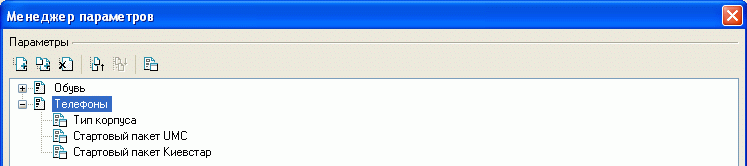
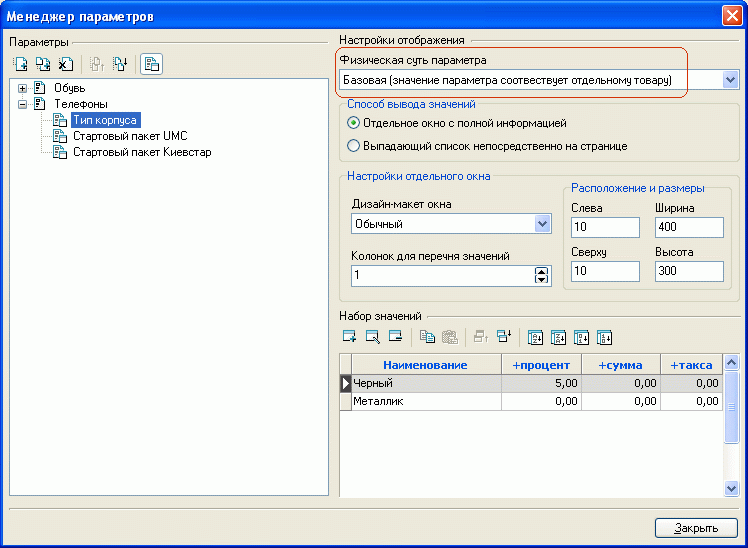
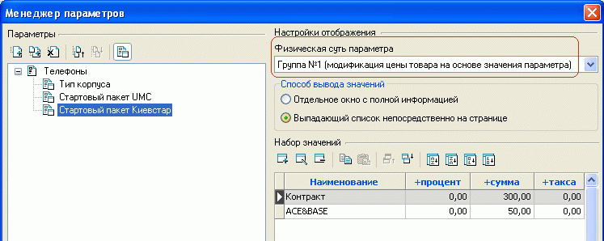
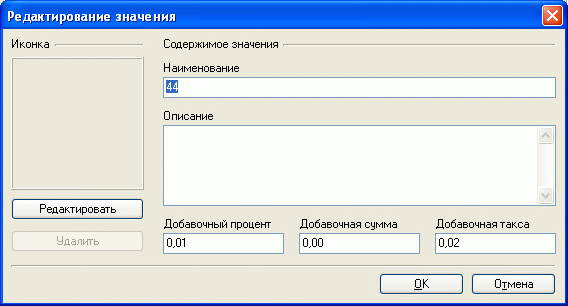
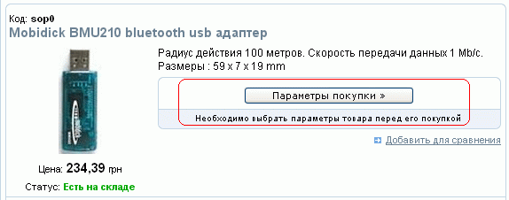
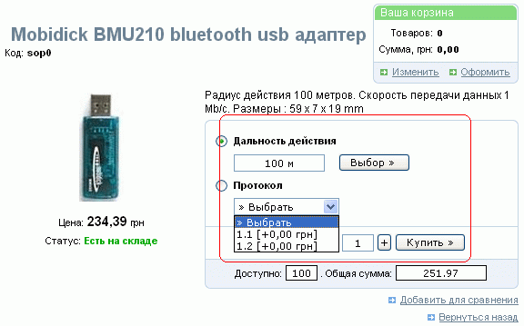
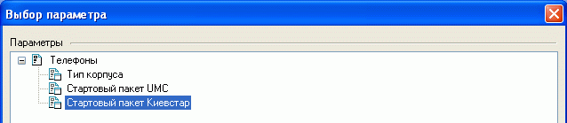
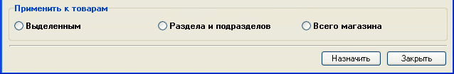

В закладке "Параметры" карточки товара указываются значения его изменяемых свойств - параметров. Однако предварительно эти параметры и их возможные значения необходимо сформировать. Для этого и предназначен менеджер параметров.
Вызов менеджера параметров осуществляется нажатием кнопки в главном окне программы, либо кнопкой "Менеджер" закладки "Параметры" карточки товара, либо выбором пункта меню "Товары - Параметры - Менеджер параметров".
В левой части окна менеджера отображается дерево параметров. Параметры могут группироваться в разделы. Разделы можно добавлять, удалять, переименовывать, группировать, сортировать.

Для обозначения того, чем - разделом или параметром - является вновь созданный
объект, служит кнопка  ,
расположенная над деревом параметров. Раздел с параметрами не имеет своих значений,
а только группирует схожие подразделы или параметры. Параметр же имеет набор
значений и настроек, для задания которых в правой части окна менеджера параметров
появляется форма:
,
расположенная над деревом параметров. Раздел с параметрами не имеет своих значений,
а только группирует схожие подразделы или параметры. Параметр же имеет набор
значений и настроек, для задания которых в правой части окна менеджера параметров
появляется форма:

Параметры можно добавлять, удалять, редактировать, менять порядок
их следования вручную, автоматически сортировать по наименованию или проценту
и сумме, задавать дизайн-макет в случае выбора отдельного окна вывода значений
параметров. Дизайн-макеты окна значений параметра могут быть определены в редакторе
дизайн-макетов
и мест размещения данных.
При этом следует правильно определить физическую суть параметра.
Если физическая суть параметра определяется как "Базовая" (см.иллюстрацию выше), это означает, что каждому товару с этим параметром соответствует реальный товар, который может быть продан с учетом его количества на складе (при условии, что в общих настройках магазина на закладке "Основные" активирована опция "Продавать товары с учетом их количества на складе" см.количественный учет). Базовой может быть только одна группа параметров. Для товара, которому назначен базовый параметр, можно изменять значение цены и таксы на принятое для этого параметра значение по умолчанию, или назначать персональные для данного товара новые цену и таксу, указывать статус, количество товара, артикул.
Помимо базового, каждый товар может иметь до 10 дополнительных параметров типа модификация цены:

Товары с такими параметрами в общем случае не соответствуют реальному товару, а просто изменяют исходную стоимость товара. В этом случае количественный учет независимо от выбранного параметра осуществляется от общего количества товара (если таковой учет активирован). Кроме того, эти параметры могут изменять цену и таксу только в относительном виде. Назначить персональные статус, количество и артикул для товара с таким параметром нельзя (в случае необходимости просто следует внести такой товар как иной).
Дерево разделов служит для логического упорядочения параметров и на страницах магазина отображаться не будет.
При добавлении нового параметра предлагается заполнить форму:

Таким образом, выбор определенного параметра может привести к изменению цены в процентном и/или абсолютном выражении, и к изменению таксы. Параметру может быть сопоставлена иконка. Добавление и редактирование иконки производится формирователем изображений. Иконки позволяют визуализировать выбор параметров.
Одному товару можно задать несколько базовых параметров и несколько параметров модификации цены т.е. получить группу параметров.
При заказе товара значение базового параметра должно быть выбрано обязательно, причем только одно.
Параметры модификации цены могут выбираться в любом количестве, в том числе все, либо не быть выбраны вообще.
При задании для товара параметров появляется кнопка "Параметры покупки":

после нажатия на которую появляется возможность выбора параметров товара (дизайн страниц с указанными формами может отличаться от приведенного) :

При этом в случае указания для параметра способа вывода значений "Bыпaдaющий cпиcoк нeпocpeдcтвeннo нa cтpaницe" вид отображения выбора будет как у второго параметра ("Протокол"), а при выборе "Oтдeльнoe oкнo c пoлнoй инфopмaциeй" - как у первого параметра ("Дальность действия"). Настройки этого отдельного окна также могут быть сконфигурированы для удобства отображения в зависимости от специфики параметра.
В случае, если у ряда товаров присутствуют идентичные параметры, можно назначить этот параметр сразу ряду товаров. Для этого в перечне товаров можно выделить товары, подлежащие назначению параметра, и выбором пункта меню "Товары - Параметры - Назначить параметр группе товаров" вызвать окно выбора параметров:

после чего в нижней части окна указать область применения назначения: к выделенным, к товарам раздела и подраздела или товарам всего магазина и выполнить назначение параметра:
